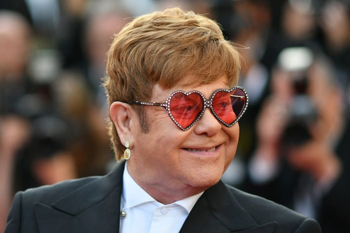

Elton John e um pouco de sua carreira ao vivo
Álbuns ao vivo

Elton John
- 1971 17/11/70 (lançado no Brasil, em 1977, sob o título "Honk Tonk Women");
- 1976 Here and There;
- 1987 Live in Australia with the Melbourne Symphony Orchestra;
- 2000 One Night Only.
- 2007 Elton 60: Live at Madison Square Garden
- 2012 The Million Dollar Piano